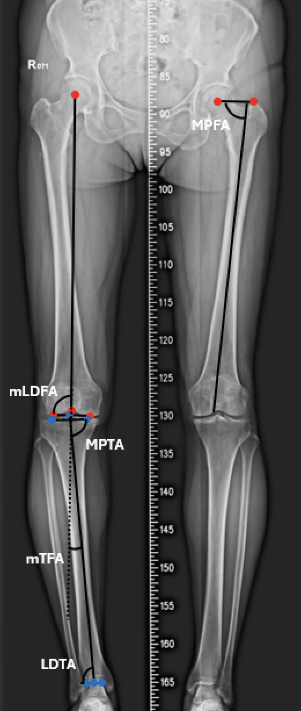
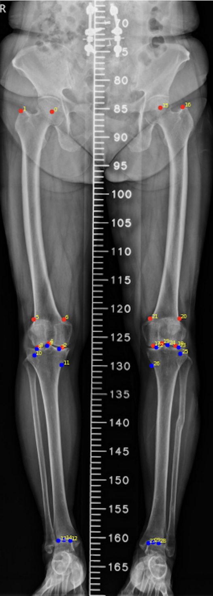

Automated Landmark Detection for Lower-Limb Alignment Assessment
Posted on 24 July, 2025
Purpose
The goal of this work is to develop an automated method for detecting 30 anatomical landmarks in radiographs of the lower limb. These landmarks are crucial for assessing lower-limb alignment (Figure 1), which is essential for diagnosing conditions like osteoarthritis and planning surgical interventions.

Existing Methods
Recent studies have incorporated deep learning for region detection or segmentation and extract key anatomical landmarks to automatically compute lower-limb aalignment parameters[1-3]. However, these approaches often rely on large annotated landmark datasets, which are labor-intensive to generate and may propagate observer bias into the training process.
Method and Result
Our study proposes a method that uses a deep learning model to segments femur and tibia, and then applies a series of geometric reasoning to extract the 30 anatomical landmarks. We trained a U-Net segmentation model using only 40 readiographs, reaching a Dice score of 0.97 for both femur and tibia. The model's output is then processed to extract the 30 landmarks. The rules for landmark extraction are based on the geometric and anatomical priors, such as the contours along the bone edges and the relationships between different landmarks. Figure 2 shows the landmark detection results on a radiograph. Without many manual annotations, the method can achieve generally accurate result if the segmentation is correct. The main challenge is the detection relise on the segmentation, which can be affected by the image quality and the presence of artifacts.

References
- [1] A Tack, B Preim, S Zachow. Fully automated assessment of knee alignment from full-leg X-rays employing a “YOLOv4 And Resnet Landmark regression Algorithm”(YARLA): data from the osteoarthritis initiative. Computer Methods and Programs in Biomedicine 205 (2021): 106080.
- [2] KR Moon, BD Lee, MS Lee. A deep learning approach for fully automated measurements of lower extremity alignment in radiographic images. Scientific Reports 13.1 (2023): 14692.
- [3] HS Lee, S Hwang, SH Kim, NB Joon, H Kim, YS Hong, S Kim. Automated analysis of knee joint alignment using detailed angular values in long leg radiographs based on deep learning. Scientific Reports 14.1 (2024): 7226.